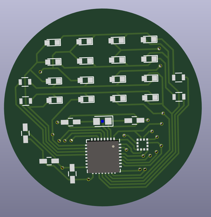

It all started with the idea of a PCB which could display the time in BCD code and is small enough to wear it on the wrist. Sadly i was not able to find a Housing which could be used for the Clock, so i created one myself in OpenSCAD and 3D-printed it. After a while i got tired to explain the BCD code to everybody, so there is also a Analogish Version available.
The Software for both Versions is unified and just differentiated by the Linker. So there is no change to the Code needed.
After some problems with sweat entering the Housing and destroying the electronics, i tried
several possible solutions (read more in the story).
The alternative try to solve the sweat issue was to remove the buttons completely and replace them
with a G-Force sensor. As sensor the Bosch BMA456 is used, since it features various
interrupt functionalities to wakeup the microcontroller and only draws a few microamps in
standby.
The powerful Sensor also made some other cool features for a wrist watch. There is a Wrist Tilt detection to activate the Watchface once the user rises the arm and takes a look on the watch. Now the watch can also be turned on while only using one hand e.g. while carrying stuff.
Another cool new feature is a stepcounter, so the watch is also a (not completely sweat resistant ;-) ) fitness tracker.
The next evolution step is switching to a new more powerful controller. For this the STM32L432K Controller was chosen. This controller also features a calender in the built in RTC.
The First PCB Version was a desaster. The PCBs arrived very fast, but the QFN Package had the wrong size. ATMEL only produces QFN32 in 7x7mm. Therefore the design of the PCB hat to be changed to the smaller package, but that gave me the Chance to shrink the Design to a smaller form factor. The part which keeps the PCB from getting smaller is the Coin Cell Battery (CR2032). On the PCBs there was the order number printed on the Front side, which would be visble in the final assembly.
The second PCB Version was designed from scratch. But the Front was the side with the Battery, so hopefully the Order Number would not be printed on the visible side of the PCB. This worked out very well for the second Version of the PCBs.
since the PCBs finally arrived. it was possible to assemble all the parts. The first PCB was assembled with some Cables soldered to the Testpins on the Backside of the Board. And the Battery case was also not assembled. Here is a Picture of the uncleaned but already soldered PCB

The PCB2 was assembled and cleaned as a First Prototype with the Housing. Here aretwo Pictures of the PCB one without the LEDs turned on and one with the LEDs turned on. Brightness was set in the Program to 100/255 (see software void showLEDs, constant perc=100)


The third PCB was ordered at aisler.net. It only took around one and a half week to arrive(to Germany). The PCB was not completely milled out. It was in a carrier PCB with rectangular shape, but it was easy to remove. I had to sand the edges a bit, since it was a bit rough on the parts where i removed the connections to the carrier, since i had to sand the PCB anyway to fit in the Housing that was no big problem. The overall Quality of the PCBs is very good, but you can not choose the thicknes or color of the PCB.
The Housing was designed in OpenSCAD. a very helpfull reference for the OpenSCAD syntax was https://en.wikibooks.org/wiki/OpenSCAD_User_Manual/Transformations
The Housing was printed by the TOOM Printing Service as SLS in PLA. Sadly all the surfaces are not really smooth, therefore the Buttons are working very bad. I tried to glue in the glass with superglue, but the glue dried out white, this looks really bad :-(
The next housing should be produced via SLA with transparent Resin, so no glass for Protection is needed, since the resin could be used.
Problems while printing with SLA It turns out, that there is no completely transparent Resin available. All of them get a yellow color sooner or later. So it is not really beautiful as a glass.
A friend told me that most of the time the resin will not reflect light equally in every spot, therefore i decided to order a PCB without glass and do the mounting of the glass with very tight tolerances and a rim on the top edge. this worked out extremely well. Another goal was to make the second Housing slim, because the first one was very bulky. With a bit of optimization is was possible to integrate the bottom plate completely in the housing. The overall thicknes was reduced from about 15mm to 9.4mm with the 1mm PCB or 10mm with the new 1.6mm PCB. For the PCB to tightly fit in either the Housing has to get some aditional holes or at least the Battery clip has to be modified.


The first watch broke down after nearly 1 year. After opening the Housing the Problem was very obvious. Sweat was entering the Housing and corroded the PCB and the mounted parts.

Cleaning the PCB and adding something to absorb the moisture As a solution i tried to clean the PCB with Isopropanol and glued some rice to the PCB to absorb the moisture, that helped only for about a week and the Watch stopped working again. So that is not the best solution, but is is an extraordinary try ;-)

adding isolation Tape between the lid and the housing The second solution was to add Tape, which is originally designed to be used to seal threads, between the housing and the lid. That worked out a little bit better, but the Watch also stopped working after a few weeks.
Analyzing the Watch again After analyzing it again the PCB seemd to be ok. The PCB was only a little damaged from the first sweat attack. The Problem was that the time stopped to run, but another point was that the LEDs wont go off anymore. But it was possible to set the time. So the conclusion is that the clock which is run by the crystal stopped running.
Adding clear Nailpolish to guard the Crystal The next attempted solution was to add clear Nailpolish to the PCB, so the crystal is completely covered. This is an attempt to stop moisture from crawling below the crystal and stopping the clock.
Adding Nailpolish was also not the real solution. The Clock also stopped to work after a few weeks.
commercial products to insulate PCBs The next attempt will be to use a commercial Product to insulate the PCB. For this i will try Plastik 70 Super from Kontakchemie.
The time is displayed in BCD Code. For further reference please see the Picture below:
There are Two Buttons on the Watch:
To read the Watch it is necessary to activate the Display via one of the Buttons
The LEDs are read columnwise. So the right two columns are showing the Minutes. If an LED is litone have to add its Value to the Minutes if not then nothing is added. So for the full hour no led in the right two columns will be lit.
In the Example above the following LEDs are lit: M40, M10, M08 and M01. The sum of all the values is the current minute value 40 + 10 + 8 + 1 = 59
The Hours are displayed exactly like the Minutes. For the hours the 24 Hour Format is used. In the Example above the following LEDs are lit: H10, H01, H02. The current Hour Value is also determined by summing everythin up: 10 + 1 + 2 = 13.
So the current Time in the example is 13:59. If it is 0:00 the watch will display 24:00 to make sure 0:00 is not confused with a broken watch.
To set the time first of all the display has to be activated, afterwards both buttons have to be released (to make sure that the setup mode is not accessed accidently). Now both buttons have to be pressed. Now the LED H80 lights up, to signalize that now it is in set hour mode. Now Both buttons can be released again.
To switch to the set minute mode the right button has to be pressed. In set minute mode the right button switches back to the normal mode.
With the right button the value which is set currently can be incremented. The hour will not be incremented wen incrementing the minutes from 59 to 0.
Both setup modes will timeout if no button is pressed for 30 seconds. While the watch is in setup mode the clock will be stopped, after returning to normal mode the seconds will start from 0 so it is easy to set the time precisely.
After the PCBs for the BCD Version were working, i also created an analog Version, so i dont have to explain the Clock everytime ;-)
The Analog Watch features the same Schematics for the basic clock functionality, but the display is done via Charlieplexing the LEDs. There are 4 Clustes with 4 Pins which drive all the 42 LEDs. 12 LEDs on the inner ring are displaying the hours. On the outer ring 30 LEDs display the Minutes. Since it was not possible to fit 60 LEDs on the outer ring, uneven numbers are shown while lighting up the two neighbouring LEDs.

The PCB for the analog Version is designed with the same mechanical Interface as the Binary Version therefore the Housing from the Binary Version can be used.
The first Watch i gave away was one of the analog PCB ones i built for my dads birthday. for this Watch i replaced all the resistors for the LEDs with Zero Ω resistors, so the LEDs got more bright and are clearly readable also in the sunlight.

The PCB is based on the Binary Watch. Even the Buttons would still work if soldered on the board. Additionally to the original Schematics there is a Bosch BMA456 connected to the SPI, which is already on the back of the PCB to enable programming via Pogo Pins. Additionally there is also the Chip select pin used and two interrupt pins to enable the wakeup functionality via the BMA sensor.
The SPI interface was chosen, to keep thepower consumption low, since SPI compared to I2C doesn’t need PullUp Resistors.
The BMA Sensor is mounted on the back of the PCB to keep the symetric watch face.
The concept is to use the BMA Sensor also as interface. To enable the Display and also to set the time. So no buttons will be needed this should also enable a housing without holes to keep sweat from crawling into and solve the corroded PCB problems I had with the first BinaryWatch
For interfacing with the BMA i use my own Bosch_BMA456 with an additional SPI-adapter.
The Software still has the ability to work with Buttons, but since the BMA is working really well there is no point in using th buttons. and risking that sweat will enter the housing.
Adapting the housing was very easy, just remove the holes for the buttons. A little smoothing was done afterwards, because there were some thickened walls around the holes, where the Buttons were mounted.
The time is displayed in BCD Code. For further reference please see the Picture below:
To read the Watch it is necessary to activate the Display this can be either done via double tapping the Housing or raising the arm to take a look on the watch(tilt it by a minimum of 12 degrees with the Watchface facing up and holding it steady for about one second)
The LEDs are read columnwise. So the right two columns are showing the Minutes. If an LED is litone have to add its Value to the Minutes if not then nothing is added. So for the full hour no led in the right two columns will be lit.
In the Example above the following LEDs are lit: M40, M10, M08 and M01. The sum of all the values is the current minute value 40 + 10 + 8 + 1 = 59
The Hours are displayed exactly like the Minutes. For the hours the 24 Hour Format is used. In the Example above the following LEDs are lit: H10, H01, H02. The current Hour Value is also determined by summing everythin up: 10 + 1 + 2 = 13.
So the current Time in the example is 13:59. If it is 0:00 the watch will display 24:00 to make sure 0:00 is not confused with a broken watch.
To switch between time display and stepcounter display one needs to double tap the watch. In the stepcounter mode the value is displayed differently. the first column from the left is used to signalize that the stepcounter is shown, it will always display 3(H20 & H10) in this mode, because this would be an unplausible time. the two middle columns are used to display the two most significant numbers of the stepcounter. The most right column is used to display a exponent on the base of 10.
| 0 | 0 | 0 | 0 |
| 0 | 1 | 1 | 0 |
| 1 | 0 | 0 | 1 |
| 1 | 1 | 0 | 0 |
54 ⋅ 102 = 5400
To set the time first of all the display has to be activated, afterwards the watchface needs to be turned down and double tapping the Housing. If the First step was succesful the two LEDs H80 and M80 will light up together. To enter the set hour mode the watchface needs to be turned up again and the watch needs to be double tapped again.
Now the LED M80 will be turned off.
To change the Value the watch needs to be tilted up to increase the value or tilted down to decrease the value, to switch to set minute mode the watch needs to be double tapped again. Changing the minutes works exactly like changing hours. To finish the setup process double tap the cloak again. Now the second counter will also start with zero, so it is possible to set the time precisely.
The obvious next evolution step would be to include the BMA Sensor into the analog Version. But since the ATMega328P has a lot of reserved pins there are not enough usable pins to supply the BMA and the 42 LEDs (only one Pin was missing). So there were a few possible solutions
Regarding the Software this would be the easiest Varaint to go with. But there are a few disadvantages of the AVR Controller.
So this was not the final solution.
I started with the Atmel SAM Controller, because I liked the experience with Atmel Controllers so far. For a comparison of Microcontrollers there is a great article from Jay Carlson https://jaycarlson.net/microcontrollers/. The advantage of the Atmel SAM Controllers are there are a lot of open source Tools which could also be used out of a makefile, so the projectsrtucture is very easy to create. All the Configuration and the Bootupsequence is generated by the Atmel Start utility. https://start.atmel.com/. The feature i liked the most is the SERCOM Interface.A SERCOM interface could be used for various serial Interfaces (UART, I2C, SPI...), the biggest advantage is that all thepins could be multiplexed with each other.
Therefore i created a Evaluationboard i could start playing around with: https://github.com/sulkith/devboards/tree/master/ATSAML22G18A_LowPowerArm
Once the Board arived i encountered the first problem. The files generated by the Atmel Start utility are licensed under the ASF license. And since i’m no lawyer, i couldn’t really decide if it is safe to use these files in an open-source project like this one. So i decided to build a wrapper, which would unpack the Package generated by the Atmel Start utility and include the files in my project Structure (https://github.com/sulkith/devboards/blob/master/ATSAML22G18A_LowPowerArm/Software/AtmelStart/AtmelStartIntegrate/importAtzip.sh). But as soon as you need to change some code in the Startup or in the drivers the whole process is not working anymore.
But since in the early stages one has to change a lot of settings in the configurator and include it back in my code. So the whole Workflow is some kind of clumpsy. And i got a bit sick of changing a Setting and taking one or two minutes to change a single option. So i was looking for a solution where the whole process is smoother.
So a few colleques suggested to go for a STM32 Controller because the STMCubeIDE is very smooth and all configurations are done inside the IDE.Afterwards the Code is directly generated. A big plus point was that in the copiright notice it is explicitely stated, that you are allowed to redistribute the software if you mention the original source(this is automatically done in the header of every file). So using it for an open source project doesn’t seem to be a problem.
To start with the ecosystem i went for a Nucleo-L053R8 development board with a lowpower Cortex M0+. It took me about half an hour to get the I2C running. So the IDE is great and easy to use. The Controller used on the Board is featuring a on-chip RTC which is also running in all Low-Power modes including Standby mode. So all the Timekeeping wor the wrist watch could be done completely by the chip. There is also a RTC-Clibration feature, which could be used to syncronize the deviation of the Crystal with a high precision frequency source. Sadly the STM32L053R8 Controller is not available in a QFN32 Package.
While searching for a replacement for the STM32L053R8 i came across the STM32L432K Controller, with a Cortex M4 Core, which is also featuring a Shutdown mode with only about 400 nA with the RTC running. So the Watch will consume very low power. A Wakeup is also possible by the Wakeup pin, which could be connected to the BMA Controller to wake up the Controller on wrist tilt or double-tap. There are enough pins for using the Wakeup Pin, SPI, SWD-Debugging and supplying all 42 LED for the analog version. So from the Hardware point of view everything is fine.
Binary PCB Sinc the ST QFN Package looks like a big black box i also placed the BMA456 sensor, which also looks like a black box right next to it for a more PCB like look.

The Boot Pin When the first PCBs arrived it was very easy to get them working, but when the Debugger was not connected sometimes the controller wasn’t booting correctly and was displaying strage things on the LED. When connecting to the controller without a reset one could identify the courrent all stack. And the address was in the section of the ST Bootloader. So the obvious suspect was the Boot Pin, the pin was floating in the initial PCB design and this is a bad Idea. In the first Prototype this was fixed by connecting it directly to the neighbouring ground pin. For the next version there will be a resistor pulling it to ground.
Since the Watch was working now it was time to get the crystal calibration working. But since the controller only has a 32 Pin Package the Calibration Pin is not available in the footprint.
Calibration A Workaround for the missing calibration feature was to use the Timer in frequency counter mode with the LSE clock(External Crystal) connected to the Clock pin. So the Input timervalue will be saved on each Signal edge, after two edges the difference could be calculated. For an input Frequency of 1Hz the difference has to be exactly 32768. To increase the accuracy was the presacaler was set to the maximum value of 8. So the value has to be exactly 8*32768. To further increase the accuracy the whole process will be repeated 20 Times and then the average deviation will be calculated. From this deviation the correction value per 1 ppm could be calculated. But after the calibration procedure the Watch was still not very acurate.
Load Capacitance While searching for the source of the Clock Deviattion i came across the Application Note 2867 https://www.st.com/resource/en/application_note/cd00221665-oscillator-design-guide-for-stm8af-al-s-stm32-mcus-and-mpus-stmicroelectronics.pdf Which describes the Design guidelines for oscillators used in combination with STM32 controllers. The crystal used in the Clock is the Abracon ABS05W-32.768 kHz-D. The AN2867 recommends 4pF Load Capacitors for this setup. Till now i used 10pF Capacitors, this could als explain the heavy correction which was needed for the AtMega328P.
So i did a few single measurements to measure the difference of the Changes done. The measurements were done with the same Controller on the same PCB, once with a Battery Supply (2.8V) and once with Power Supply from the Nucleo Board (3,3V), The second change was the Change of the Capacitors from 10pF to 3,9pF (i couldn’t get exactly 4pF on the 0603 Package). The Results could be found in the Table below.
| Supply Voltage [V] | Load Capacitance [pF] | Frequency [Hz] | Deviation [ppm] |
| 2,8 | 10 | 32549 | -209 |
| 3,9 | 32850 | 92 | |
| 3,3 | 10 | 32548 | -210 |
| 3,9 | 32857 | 99 | |
So we can conclude that a larger Capacitance slows the oscillator down. The correction needed for the clock was now smaller, but the deviation was still there.
CubeIDE Initialization After another few tests i found out there is a relation between Wakeups and the Deviation of the Clock. So the original Proble was every time the Controller is initialized the code generated by the CubeIDE will initialize the whole Clock System. To initialize the driver strength of the LSE Clock the clock has to be stopped, and syncronized again. This Process will delay the RTC Time by about 0,5 seconds.
Therefore i needed to adapt the initialization for the Controller. The function, which was causing the Problems is the SystemClock_Config(), if there is a LSE configured it would be initialized. So the obvoius solution would be to disable the LSE. But if the LSE is disabled the RTC would need a Clock, so the RTC was also disabled. The big Problem is if the RTC is disabled in the configuration the HAL Driver would not be included in the project. So i copied the initialization Function from the code generated without the RTC and renamed it to SystemClock_Config_without_LSE() in the Project configuration i disabled the function call to the original SystemClock_Config() and called the SystemClock_Config_without_LSE() in the usermain instead. Also the RTC initialization had to be rewritten to only initialize the RTC if the LSE is not running. For this task the Function STM32L4_HAL::HAL_driverInit() was introduced. This Function checks if a RTC clock source is set. The clock source is set in the RCC_BDCR register, which resides in the backupdomain of the STM and therefore is not cleared by a reset. So the initialization will be only done once when the Battery is inserted.
To read the Watch it is necessary to activate the Display this can be either done via double tapping the Housing or raising the arm to take a look on the watch(tilt it by a minimum of 12 degrees with the Watchface facing up and holding it steady for about one second)
Analog The analog Version an be read equally to a normal Watch. In the inner Ring the Hours from 1 to 12 are displayed. In the outer Ring the minutes are displayed from 0 to 59, since there are only 30 LEDs in the outer ring for uneven minutes the nearest two LEDs are lit up. For example for 3:15 the LEDs signalling 14 and 16 are lit up.
Binary in the Binary Version the LEDs are read columnwise as BCD code starting with 1 at the bottom. So the right two columns are showing the Minutes. If an LED is litone have to add its Value to the Minutes if not then nothing is added. So for the full hour no led in the right two columns will be lit. In the example above in the first column no LED is lit. In the second column the LED for 1 and 2 are lit. In the third column the LED for 1 is lit and in the last column the LED for 1 and 4 are lit. So it is 3:15.
To enter the Time setting mode you have to turn the Watch in show time mode upside down, Watchface facing the ground an double Tap it. The Watch enters debouncing mode. In debouncing mode the Hours 80 and Minutes 80 are blinking for the binary version for the Analog Version Hours 12 and 6 are blinking. (Blinking leds are displayed brighter in the graphic.
While in debouncing mode turn the watch around again (Watchface facing up) and double Tap it again to enter Set Hour mode.
In the set hour mode the hour can be increased by leaning the Watch away from you and decreased by leaning the watch towards you. Once the hour is set correctly double Tap the Watch again to enter Set Minute Mode.
The Set hour mode works exactly like to set hour mode. Increasing and decreasing is done via leaning the Watch fowrward an backward. Once finished a double Tap sets the Seconds to 0 and starts the Watch again.
To enter the Date display mode tilt the Watch in Time Mode to the Front(Facing away from you) at least 10 degrees and double Tap it.
Analog On the analog Version The Minutes 40 and 50 are lit up to signal Date Display. On the Hours Ring the Month is displayed as Hour and the Day is Displayed as Minutes.
Binary
On the binary Version the first column is showing 3 to signal Date Display. In the second and
third column the Day is displayed as BCD Code and the Month is displayed in binary code(it does
not stop on 9)
A double Tap with the watch facing up switches back to show time mode.
To enter the Date setting mode you have to turn the Watch in show date mode upside down, Watchface facing the ground an double Tap it. The Watch enters debouncing mode. In debouncing mode the Hours 8 and Minutes 80 are blinking for the binary version for the Analog Version Minutes 40 and 50 are blinking. (Blinking leds are displayed brighter in the graphic.
While in debouncing mode turn the watch around again (Watchface facing up) and double Tap it again to enter set day mode.
Setting the Day works exactly like setting the hour. Increasing and decreasing is done via leaning the Watch fowrward an backward. Once finished a double Tap switches to set month mode.
Setting the Month works exactly like setting the hour. Increasing and decreasing is done via leaning the Watch fowrward an backward. Once finished a double Tap switches to set year mode.
The year is only used for the leap year calculation and can be only set between 0 and 99.
Analog In the Analog Version the Set year mode is signalized by blinking both minute LEDs 30 and 50. The Year tens are shown in the inner ring with one LED per Counter and the ones are shown in the outer ring with one LED per counter. In this example XX21.
Binary
Setting Year mode is displayed by showing 3 in the first column and blinking all LEDs in the
second column. The year is displayed in columns 3 and 4. In this example XX21.
Setting the Month works exactly like setting the hour. Increasing and decreasing is done via leaning
the Watch fowrward an backward. Once finished a double Tap sets the Seconds to 0 and starts the
Watch again.
To enter Step display mode tilt the Watch in Time Mode to the Back(Facing you) at least 10 degrees and double Tap it.
Analog On the Analog Watch the hour LED 11 is lit up with the overflow counter (from 0(12 o’clock) to 3. The overflow counter counts the number of whole rounds on the Stepcounter. An overflow occurs on 15000. The current Stepcounter without overflow is displayed in the outer Ring. Each LED signalizes 500 Steps. The value is rounded to 500. In the Example the overflow counter shows 2 and the counter itself shows 6. 2 * 15000 + 6 * 500 = 33000
Binary
On the binary Watch the Step Counter is signalized by the forst column showing 7. Column 2 to 4
shows the steps in 100 counts rounded to 100 counts. So 32768 in the exmample will be shown as
(7)328
A double Tap with the watch facing up switches back to show time mode.
To enter the steps history mode you have to turn the Watch in show steps mode upside down, Watchface facing the ground an double Tap it.
The history counter can be increased and decreased by leaning the watch back and forth.
Analog The steps history mode looks like the Show steps mode, but there is an additional LEDas Hitory Counter lit up. The History counter starts at Hour 4 and increases depending on how far ago the Date is. In the Example Hour 5 is shown, so the history is from 2 days ago. The steps are show as in the Show Steps mode, so there were 7500 Steps done two days ago.
Binary
The steps hitory mode is signalized by the H80 LED. The LEDs below show how long ago the
Steps were counted, the counter starts yesterday with 0. so the example shows the Data from 2 Days
ago. The steps are displayed as in the show steps mode. so the example shows 7500 Steps 2 days
ago.
to leave this mode double tap changes to the show Battery Voltage.
To enter the steps history mode you have to double tap the Watch in show steps history mode.
Analog The show battery voltage is signalized by the Hour 11 and 12 lighting up together. The voltage is shown on the minutes ring, scaled from 3.5V to 1,5V, so each quarter is 0,5V. The Watch in the example is showing 2,95V.
Binary
The show battery voltage is signalized by the Hour 40 LED. Column 2 to 4 are showing the
Battery voltage in 10mV granularity. So the Example shows 2950mV = 2, 95V
A double Tap with the watch facing up switches back to show steps mode.